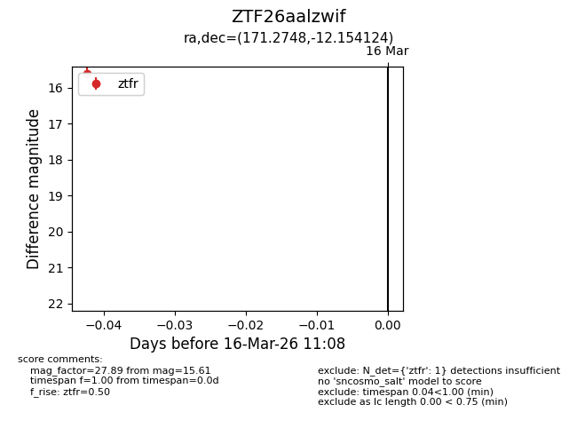
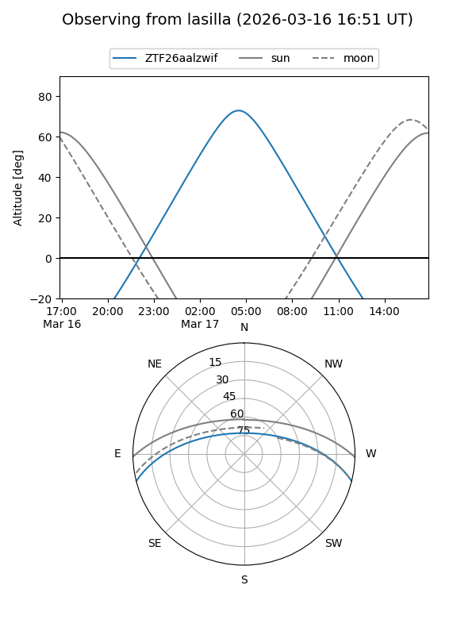
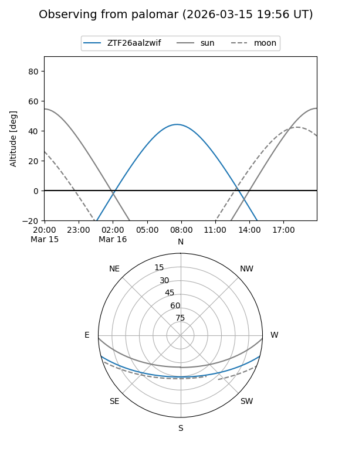

ZTF26aalzwif
Target ZTF26aalzwif at 2026-03-16 11:10
Aliases and brokers:
FINK: link
Lasair: link
ALeRCE: link
alt names
ZTF26aalzwif (ztf,fink_ztf)
Coordinates:
equatorial (ra, dec) = 171.2748,-12.15412
equatorial (HMS+DMS) = 11:25:05.96,-12:09:14.85
galactic (l, b) = (272.0733,+45.48146)
Flags:
Photometry:
last ztfr=15.61
1 ztfr detections
Lightcurve

Visibility


Additional plots